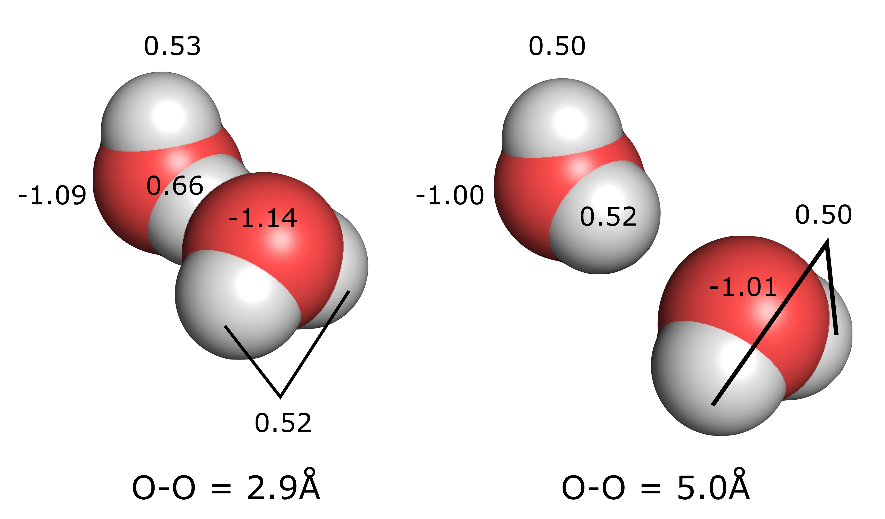
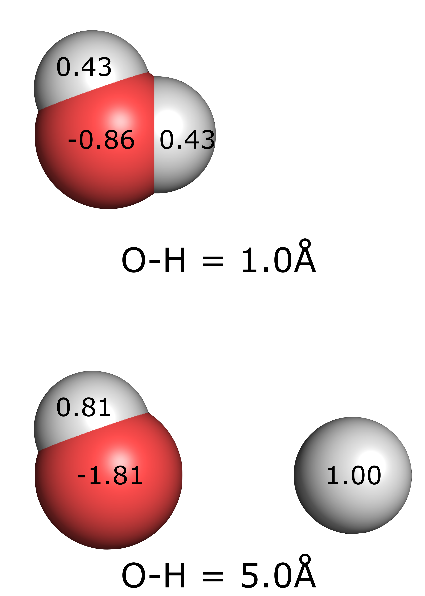
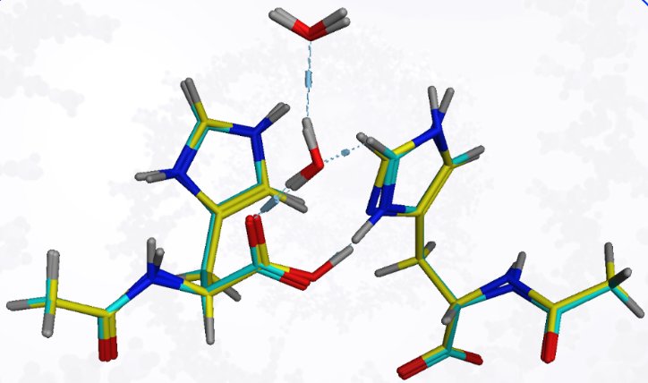
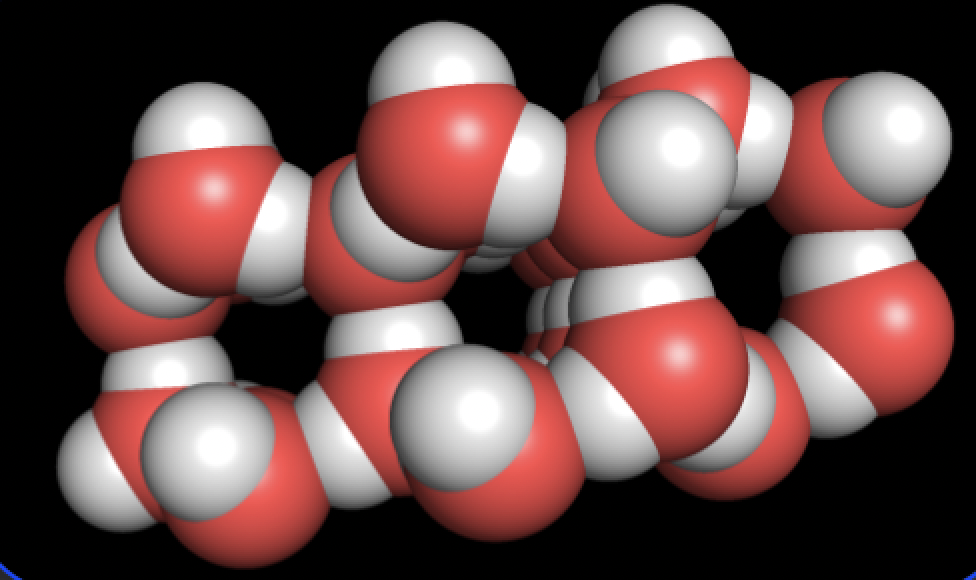
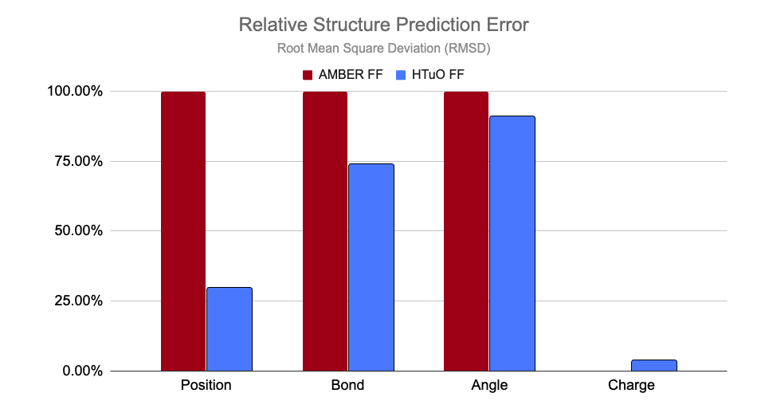
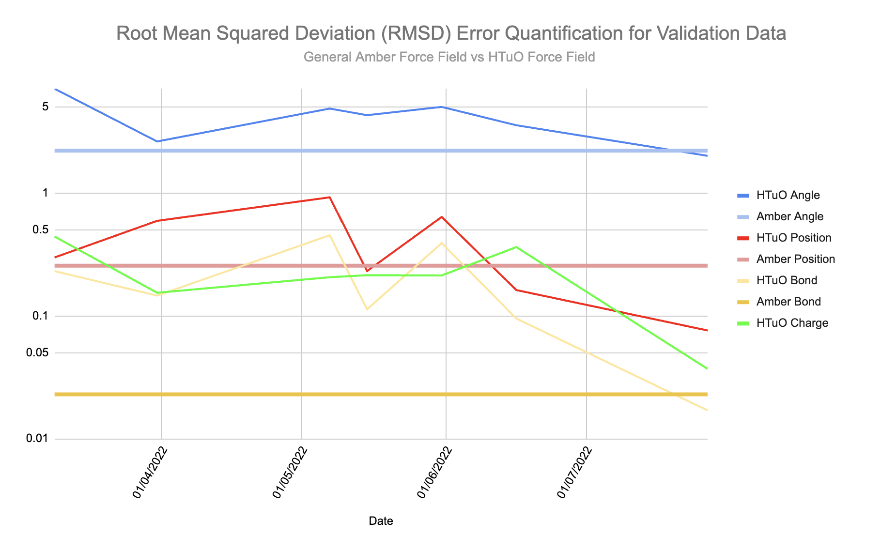

<section id="validation">
  <div class="container">
    <div class="row">
      <div class="col-xs-10 col-sm-10 col-md-10 col-lg-10 
                  col-xs-offset-1 col-sm-offset-1 col-md-offset-1 col-lg-offset-1 text-gray">
        <h2 class="section-headingr text-center">Frequently Asked Questions</h2>
        <hr class="primary">

        <h4>HTuO’s simulations include dynamic charge calculations</h4>
        <p>Charge calculations are built in to our simulations, and correctly adapt to changing situations, delivering higher accuracy and eliminating the need for charge parameterization.  This will enable better simulations, ranging from drug design to bulk solvent </p>

        <p class="text-center"></p>
        <p> The partial charges of water are a function of the environment.  Using HTuO’s Force Field, we can correctly calculate the changes in charge on interacting water molecules. This is despite HTuO’s Parameterization for Oxygen leaving water dimers  out of the training set.</p>

        <p class="text-center"></p>
        <p>HTuO’s Force Field is capable of simulating dissociation - a common chemical occurrence in natural systems.</p>

        <h4>HTuO simulations include proton transfers</h4>
        <p>In our training set, we see proton transfers between different functional groups, mimicking the interactions that would naturally occur.</p>

        <p class="text-center"></p>
        <p>In the example presented above, we identified transfer events which predict protons being passed between an Imidazole (pka ~7.0) and a carboxylate group (pka ~5)</p>

        <h4>HTuO’s Atomic Model goes further</h4>
        <p>Our platform correctly maintains the structure of ice, without explicit parameterization for water molecules.</p>

        <p class="text-center"></p>
        <p>The training set for our force field parameterization includes alcohols and cyclic structures that contain oxygen, but not water itself.   Our platform was able to correctly maintain the structure of Ice in both Molecular Dynamics simulations and using energy minimization algorithms.The training set for our force field parameterization includes alcohols and cyclic structures that contain oxygen, but not water itself.   Our platform was able to correctly maintain the structure of Ice in both Molecular Dynamics simulations and using energy minimization algorithms.</p>

        <h4>Comparing Our Accuracy</h4>
        <p>Using AMBER’s own test for testing force fields, our tools are able to  better predict the configurations of molecules in a head-to-head test.  It improves the accuracy for the location of atoms, bond lengths and angles between atoms. AMBER cannot predict charge.</p>
        <p class="text-center"></p>

        <h4>Demonstrating consistent improvement</h4>
        <p>Parameterization of the HTuO Force Field has steadily improved, even as we continue to add new atoms.  Current simulation accuracy is now on par with AMBER simulations for a wide variety of testing data molecules, which are not included in the parameterization data.</p>
        <p class="text-center"></p>

      </div>
    </div>
  </div>
</section>
